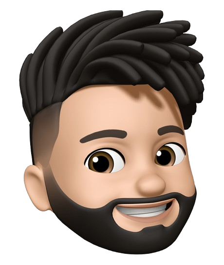

Soy Lucas Beltrame, un apasionado desarrollador web con experiencia


Actualmente me encuentro en la búsqueda de mi primera experiencia laboral. Egresado de UTU en bachillerato tecnológico, especializado en desarrollo web, con experiencia en tecnologías orientadas a la web, además cuento con conocimiento en hardware y reparación de pc. En el año 2021 junto a otros compañeros realizamos un proyecto final en UTU para egresar del curso de bachillerato en informática, el cual consistía en realizar una página web para un spa ficticio, en el que aplicamos todas las tecnologías ya mencionadas anteriormente. Estoy cursando la carrera ingeniería en computación, en la Facultad de Ingeniería de la Republica (UDELAR). Atte. Lucas Beltrame